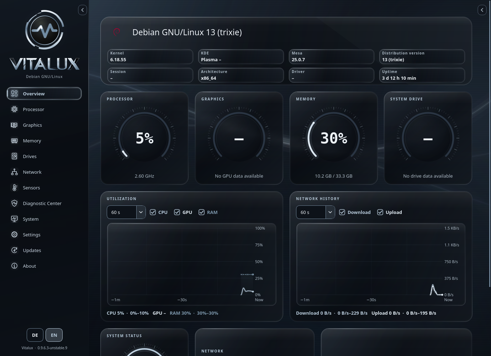

Originalfarben, Rauchglas und der originale Vitalux-Hintergrund.



Die KDE-Komponenten sind nativ gerendert, aber keine Screenshots einer vollständigen Plasma-Sitzung. Das Ringmotiv dient als Vorschau; die Installation übernimmt das vorhandene openSUSE-Originalsymbol.